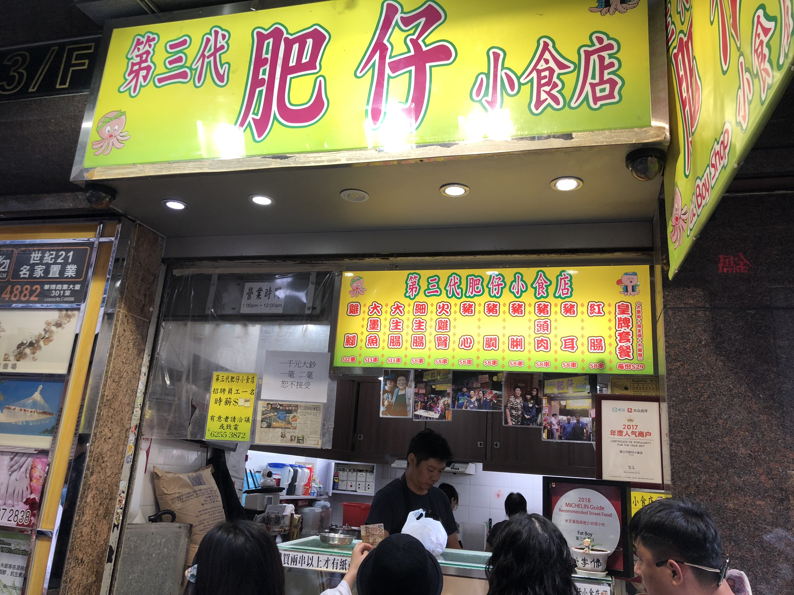
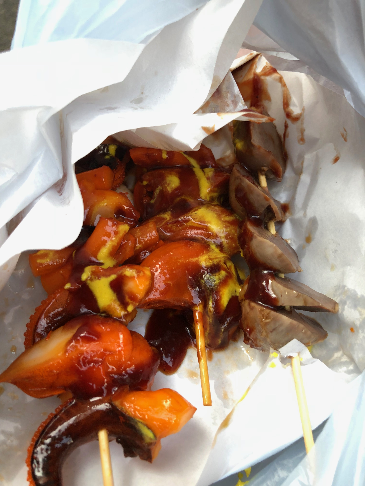

来到香港第一件事情当然就是吃了。我从米其林指南香港澳门2018版上面的街头小吃推荐中，挑了几家来吃。遗憾的是，毕竟时间精力有限，不能全部吃完。而亦因囊中羞涩，有星星的餐厅就留在以后吧～
第一家店是位于尖沙咀东部的第三代肥仔小吃店。大墨鱼，大生肠和火鸡肾的经典组合大概只有在香港的能吃到了。据闻着是肥姨（Antony Golden来香港吃东西遇到的那个很脾气不是很好的觉得Golden和他的朋友不是来吃的而是来捣乱的那个阿姨）的儿子？开的店。也是据闻东西比肥阿姨的还要好吃。
先吃的是大生肠，其实就是肥肠。一向对肥肉脂肪不太感冒的我，看卖相感觉会是不好吃的。但其实入口之后能发现这与以往吃到的肥肠完全不是一个概念。肠居然是弹牙的，是冰凉的，是爽脆的，丝毫没有给人以肥腻之感。再配上酸酸甜甜黄芥末酱和番茄酱，肠本身的味道虽然已经不剩下多少了，但整体呈现的味道是让人吃了一块还想吃一块的。大墨鱼和火鸡肾的口感和味道也大相径庭，我也过多赘述了。

